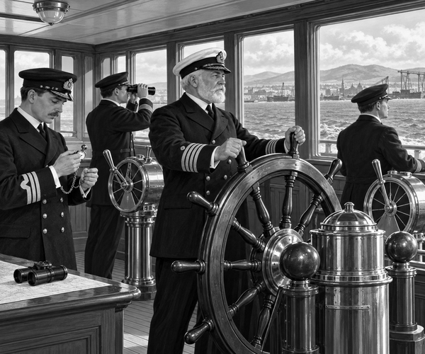

A cold wind swept over Belfast.
At the dock stood a brand-new ship.
Her name was Titanic.
She was almost ready to carry passengers.
But first, she had to pass a test.
The test was called a sea trial.
It had been planned for 1 April 1912.
Strong winds made the water too rough.
So the trial had to wait.
Early the next morning, the wind was calm.
Tugboats pulled the huge liner away from the dock.
They guided her towards Belfast Lough.
There were no holiday passengers on board.
Only crew, builders and inspectors made the trip.
They had work to do.
On the bridge, officers checked the compass.
A compass shows which way a ship is pointing.
But a giant steel ship can tug at its needle.
The officers carefully adjusted it.
Compass fact: Sailors compare a ship's compass with known directions. This helps them spot and correct an error.
Then the engine-room telegraph rang.
Clang!
The handles moved to “slow ahead”.
Far below, engineers opened the steam controls.
The great engines began to turn.
Thump. Thump. Thump.
The three propellers pushed against the sea.
Titanic moved ahead.
Next came the speed test.
The ship steamed between marks on the shore.
An officer held a watch.
He timed how long the ship took.
The marks were one measured mile apart.
From the time, the crew could work out the speed.
“Half speed ahead!” came the order.
White water curled along the black hull.
“Full speed ahead!”
The funnels breathed dark smoke.
The wake stretched far behind.
But going fast was only part of the trial.
A safe ship must also obey her helm.
The wheel turned.
At the stern, the rudder swung through the water.
The giant ship leaned into a wide curve.
The officers watched closely.
Would she turn when they asked?
Yes.
Titanic carved a neat circle across the lough.
Then came a stopping test.
The order went down to the engine room.
The engines slowed.
Then they pushed the other way.
Foam boiled around the stern.
Little by little, the great ship stopped.
Sea-trial fact: A new ship is tested before normal service. Crews check important jobs such as steering, engines and stopping.
All day, the team watched and wrote notes.
They listened for strange sounds.
They checked every order and every reply.
At last, the tests were complete.
Titanic had passed her sea trial.
The new liner was handed to her owners.
At eight o'clock that evening, she left Belfast.
Her next stop was Southampton.
The ship slipped into the darkening sea.
Behind her, Belfast's lights grew small.
It had not been a passenger voyage.
It had been a day of careful tests.
And every test had helped the crew learn how their giant ship moved.
1. Where did Titanic carry out her sea trials?
2. Why did the officers test the ship?
3. Where did Titanic sail next?